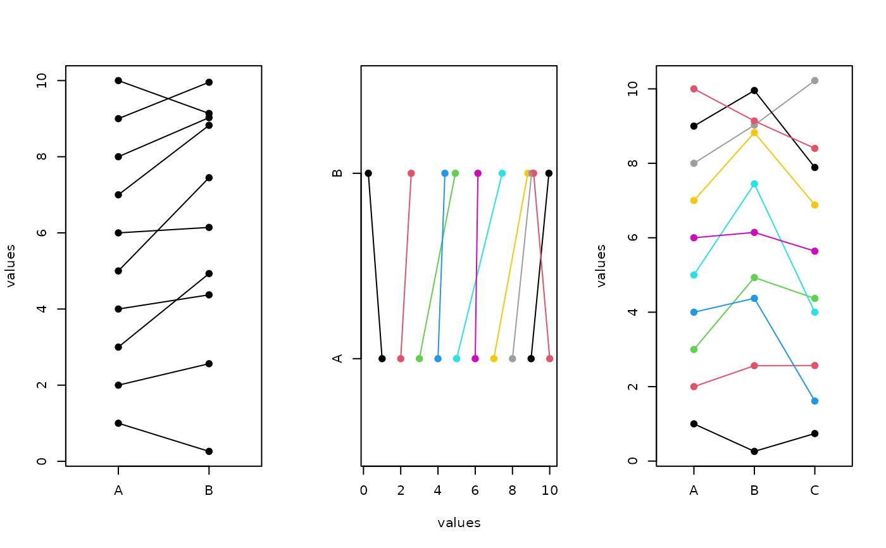

Ladder Plot
ladderplot.RdMakes a ladder plot, similar to parcoord but with more flexibility and graphical options.
Arguments
- x
A matrix or data frame with at least 2 columns.
- scale
Logical, if the original data columns should be scaled to the unit (0-1) interval.
- col
Color values to use for rows of x. If longer than 1, its value is recycled.
- pch
Point type to use. If longer than 1, its value is recycled.
- lty
Line type to use. If longer than 1, its value is recycled.
- xlim, ylim
Limits for axes.
- vertical
Logical, if the orientation of the ladderplot should be vertical or horizontal.
- ordered
Logical, if the columns in x should be ordered.
- ...
Other arguments passed to the function stripchart.
Details
The function uses stripchart to plot 1-D scatter plots for each column in x. Then points are joined by lines for each rows of x.
See also
Almost identical function: parcoord
Examples
x<-data.frame(A=c(1:10), B=c(2:11)+rnorm(10))
y<-data.frame(x, C=c(1:10)+rnorm(10))
opar <- par(mfrow=c(1,3))
ladderplot(x)
ladderplot(x, col=1:10, vertical=FALSE)
ladderplot(y, col=1:10)

par(opar)
## examples from parcoord
if (FALSE) { # \dontrun{
if (require(MASS)) {
opar <- par(mfrow=c(2,3))
z1 <- state.x77[, c(7, 4, 6, 2, 5, 3)]
parcoord(z1, main="parcoord state.x77")
ladderplot(z1, pch=NA, scale=TRUE, main="ladderplot state.x77 original")
ladderplot(z1, main="ladderplot state.x77 original")
ir <- rbind(iris3[,,1], iris3[,,2], iris3[,,3])
z2 <- log(ir)[, c(3, 4, 2, 1)]
parcoord(z2, col = 1 + (0:149))
ladderplot(z2, scale=TRUE, col = 1 + (0:149),
main="ladderplot iris original")
ladderplot(z2, col = 1 + (0:149))
par(opar)
}
} # }